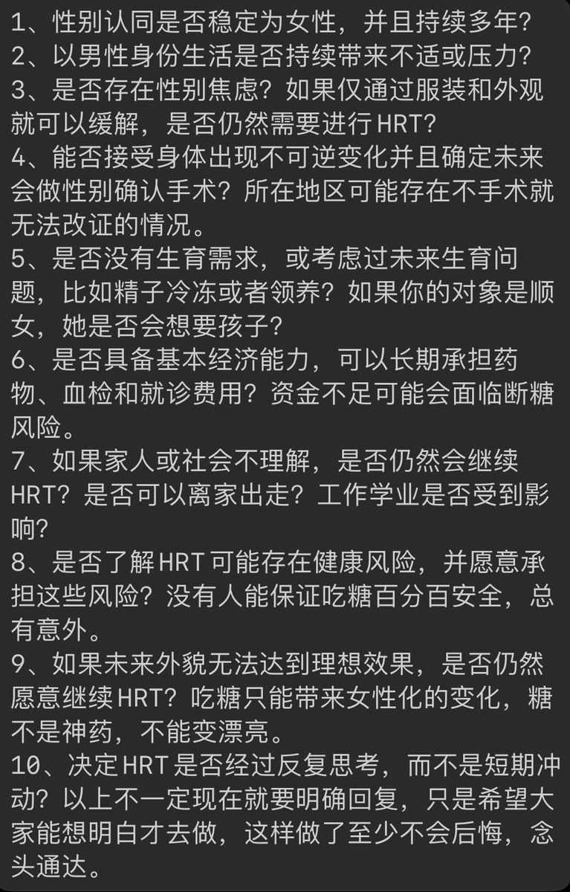

小虚空🍥
@tokerumaisurii
激素替代疗法（Hormone Replacement Therapy）是调节人体的技术手段，与打胰岛素控血糖、补充维生素改善健康状况等本无二致，无须与性别认同关联，如果接受副作用，完全可以为了当一个很母的男孩子去使用雌激素，或者反之用雄激素。不过激素会带来一定程度性别刻板的心境和思维模式，和可能影响取向。

小白云☁️
@LizzyOvO520
HRT - 1 改
这是一份帮助大家评估风险和决心的问卷。是否HRT最终由你决定，身体属于你自己。提出这些问题只是为了提醒可能遇到的情况，希望大家在充分了解和思考之后再做决定。我提出的这些问题可能仍有不足，最后欢迎提供更多观点建议。
附性别烦躁指南链接
https://t.co/ihz4c4b45x
#mtf #hrt https://t.co/1AsZx2pdGe